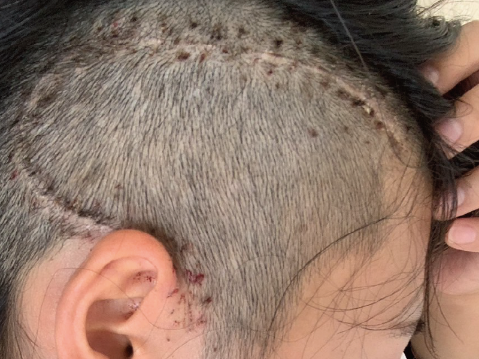

開頭手術

入院して数日後、いよいよ手術の日がやってきました。手術のリスクや死亡の確率を事前に聞き、流石に怖いと思いながらも「この珍しい病気を引き当てたのに手術でも引いたら逆に相当な強運の持ち主だぞ…？」などと考え、気持ちを落ち着かせて臨みました。「寝てれば終わる！」と気合を入れて手術台の上に乗り、麻酔の注射(めちゃくちゃ痛かった)を受けて、記憶が途切れています。
目が覚めると両親がいて「生きてる〜！」と言った覚えがあります。術後の集中治療室は親族しか入れないと聞いていたのですが、彼も心配そうに私を覗き込んできて「この部屋入れてもらえたんだ(ラッキーな男め)！」とか「普段泣かないのに、変な顔してらぁ！」などと思い、面白くて笑ってしまいました。その後の記憶はありません。いつの間にか集中治療室を出て、ナースステーション前の個室に移動してきていました。
後で聞いた話だと、手術は約7時間かかり、しかし出血はコップ一杯にも満たず。「目に見えている腫瘍は全て取り切った、大成功だ！」とドクターはおっしゃっていたそうです。本当にありがとうございました！お医者様は偉大です。